解释：评估后悔程度，w为全局最优解，w_t为每次更新的权重，R(T)表示了在线学习和批量学习的gap。当R(T)随T增长低于线性时，效果随迭代而增加.
解释：评估后悔程度，w为全局最优解，w_t为每次更新的权重，R(T)表示了在线学习和批量学习的gap。当R(T)随T增长低于线性时，效果随迭代而增加.分析方法： 对于在线学习算法，证明其R(T)<=a，得到效果下界。
在线学习框架，每一次迭代，环境给出一个样本，模型作出预测并产生loss，更新样本
广告场景：用户请求->模型预估->产生loss(用户是否点击)->更新模型
业务实践：用户请求->模型预估->等待一天(或小时级)->产生loss(用户是否点击)->更新模型
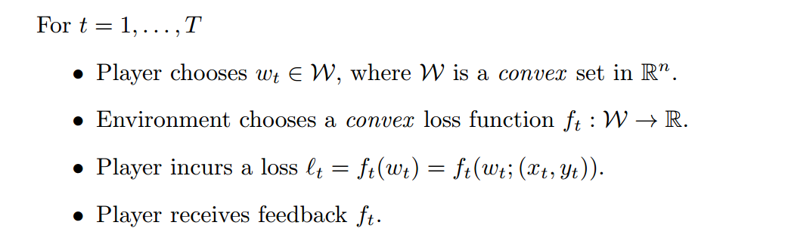
解释：评估后悔程度，w为全局最优解，w_t为每次更新的权重，R(T)表示了在线学习和批量学习的gap。当R(T)随T增长低于线性时，效果随迭代而增加.
分析方法： 对于在线学习算法，证明其R(T)<=a，得到效果下界。
举例：
最简单的在线学习算法，在线梯度下降，R(T)分析略。
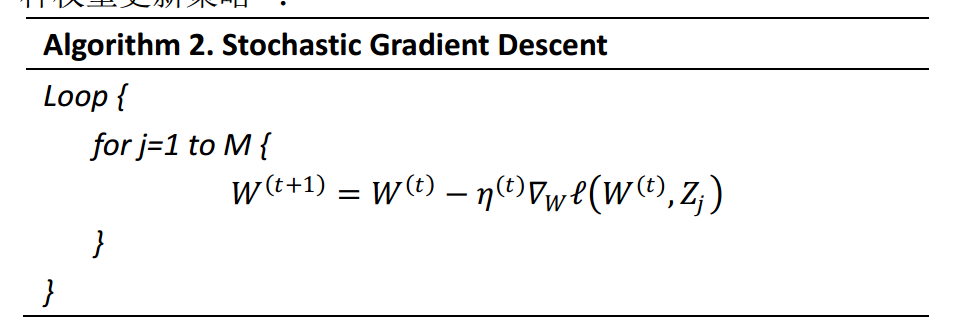
一般是通过约束区域和损失函数等高线，证明l1比l2更容易获得稀疏解。
另外一种解释： l2在靠近0的附近变化变小，而l1变化量不变。

优化问题没有解析解时，即使使用l1也很难获得稀疏解。l1只能保证快速逼近到0附近。在线学习只使用l1不容易获得稀疏解。需要额外手段来保证稀疏。
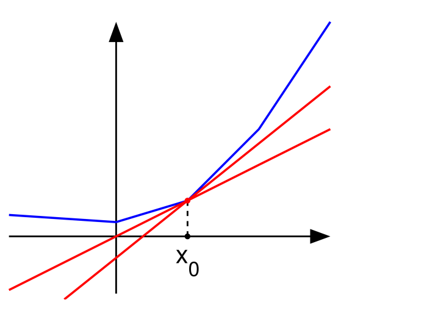
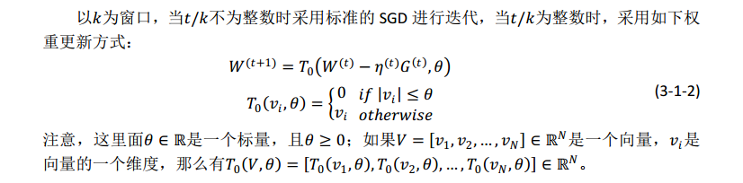
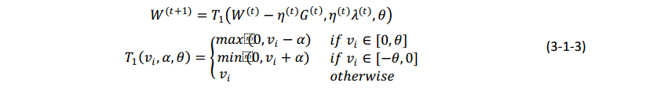
直观的获得稀疏性的方法，当权重小于阈值时设置为0
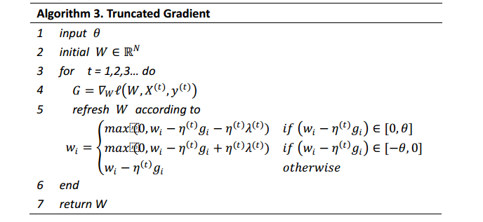 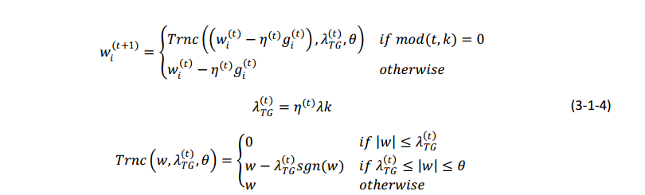


权重更新分两个步骤：

第一步为梯度下降，第二步在第一步梯度下降得到权重附近加入正则进行最优化。
合并公式有：

考虑正则为l1的FOBOS：

使用技巧求解，得到
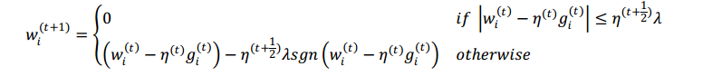
写成梯度截断的形式：
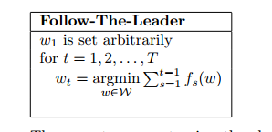
显式的获取稀疏性。
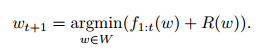
在线学习中每一轮将w更新为在全部历史轮数上的最有解。

考虑l1-FOBOS的更新公式：
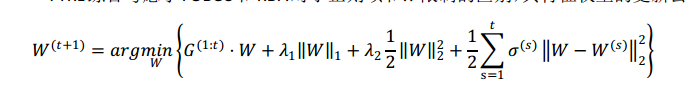
定义FTRL损失函数
f(t + 1)(x) = gt(x − xt) + (1/nt − 1/nt − 1)(x − xt)2
套用FTRL优化方法：
argmin∑ft + R
得到FTRL的优化函数

将最后一项展开，可以得到